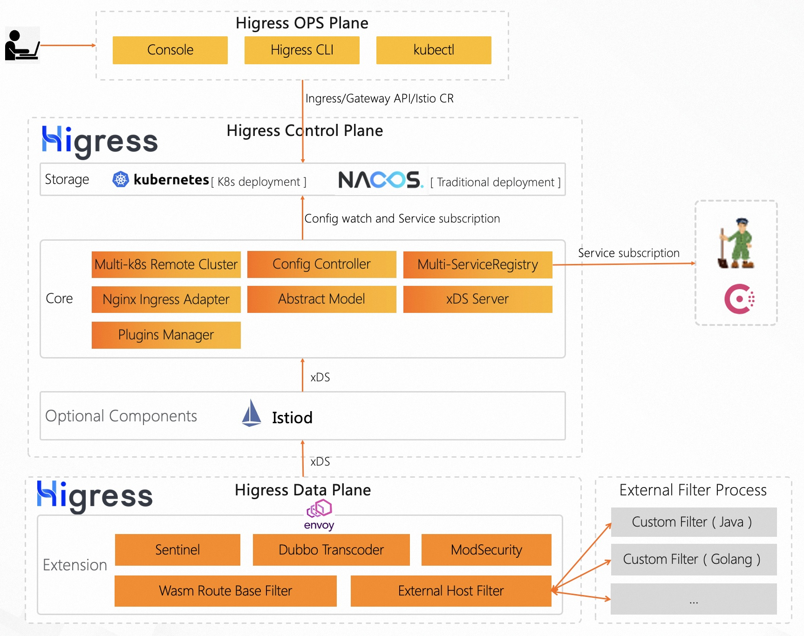
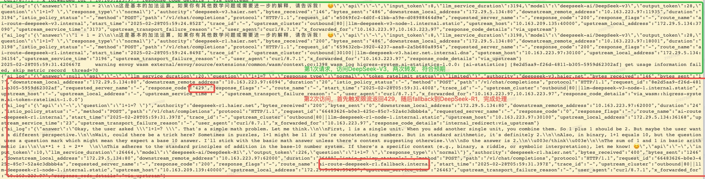
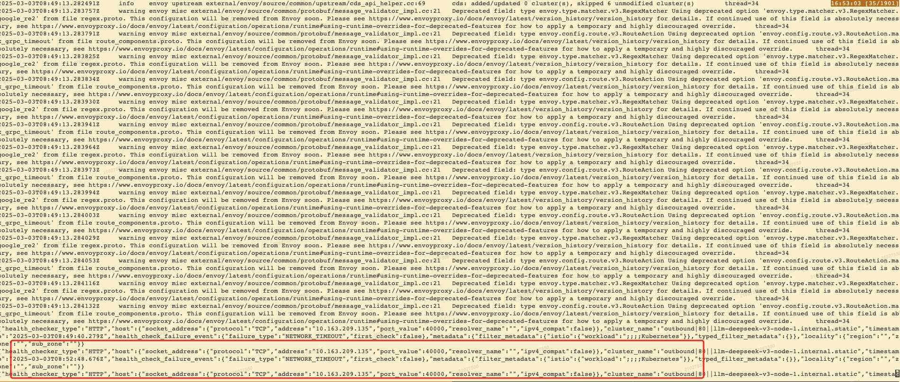
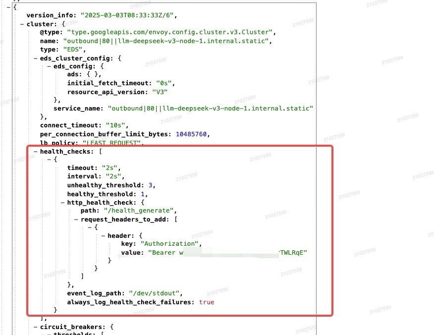
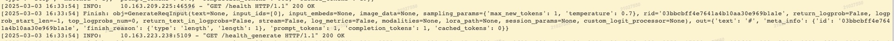

前言
大模型风头正劲，不论是自建私有DeepSeek系列模型，还是商用的Qwen、ChatGPT等系列模型，均需要一层中间代理，去完成一些通用的能力：
屏蔽模型供应商API接口的调用差异，接口的规范，目前推荐统一使用OpenAI。
通过限流的方式保护自建服务，或是控制商用调用成本。
通过fallback在不同模型供应商之间切换，提供更佳的用户体验。
进行安全审查，杜绝非法访问。
RAG、缓存、prompt增强、可观测性、agent等扩展能力。
目前市面上关于AI网关的能力尚处于建设中，尚未有大规模成熟落地的方案。
技术方案
Higress
简介
higress，不论之前开源的云原生API网关还是现在开源的云原生AI网关，本质上都来源于阿里内部的一套基于Envoy和Istio封装的内部网关，产品化为现在公有云上的微服务引擎MSE网关或者是云原生API网关，整体架构大约相同。
整体架构
 这套网关通过一套Higress自定义的CRD + K8s Ingress，使用controller内部转化为Istio的相关CRD，例如VirtualService、DestinationRule、ServiceEntry、Envoyfilter。大量依赖了Istio的相关能力，通过Istio的xDs协议，对Envoy进行了配置的个性化定制。
网关本身兼容K8s Ingress的绝大部分annotations，同时提供了higress.io/开头的自定义annotations，可与ingress的annotation互换使用，为了兼容使用Ingress annotation的用户，对目前Kubernetes Gateway API的兼容有限。
代码仓库中强依赖了Istio和Envoy的commit提交，并进行了部分patch修改。在Istio和envoy版本迭代升级方面，存在很大的问题。
适配了Dubbo、Nacos、Zookeeper、Consul等传统微服务框架和注册中心。
本次我们重点关注它的AI的网关能力。
基础组件
higress主要包含三个组件：
higress-controller
K8s的controller，使用调谐，来完成Ingress或Higress CRD到Istio CRD的转变。
可使用如下命令查看转换后的Istio资源对象，通过Istio dashboard envoy或者是hget dashboard envoy中的config_dump无法查看到。
1
| kubectl exec higress-controller-657dfbf95c-j4bv2 -c higress-core -n higress-system -- curl http://127.0.0.1:8888/debug/configz | jq | less
|
higress-gateway
主要是Envoy，网关实例。
higress-console
控制台，使用Java编写，封装控制台逻辑，例如fallback两条ingress的创建。
核心功能
higress在之前的架构基础上提供了大量开箱即用的AI插件，来丰富网关的AI能力，具体可查看官方文档说明或者是Github源代码库。
higress支持上传自己开发的wasm插件，相关封装和指导可参考系列文档
场景方案
限流+Fallback
自建的大模型服务，受限于硬件资源，需要根据服务的容量采取限流来保护服务的稳定性，保障绝大多数用户的访问体验；供应商的模型服务，需要进行一定的成本控制，不能无限制调用。默认情况下，优先调用自建服务，在自建服务满负荷的情况下，有选择地分流至模型供应商。
目前开源的版本，暂不支持限流配置到服务。本次实验采用了二次转发的方式：
第1条路由转发至自建大模型服务，并在该调路由上开启了ai-token-ratelimit插件，设置TPM=1。
第2条路由提供面向用户的消费者认证，并转发至第一条路由的域名：重写了Host，防止循环；配置了fallback到另一模型服务。
上述功能，先通过higress自带的自带控制台配置，随后针对具体的资源进行调整。以下仅展示使用到的核心资源对象。
1
2
3
4
5
6
7
8
9
10
11
12
13
14
15
16
17
18
19
20
21
22
23
24
25
26
27
28
29
30
31
32
33
34
35
36
37
38
39
40
41
42
43
44
45
46
47
48
49
50
51
52
53
54
55
56
57
58
59
60
61
62
63
64
65
66
67
68
69
70
71
72
73
74
75
76
77
78
79
80
81
82
83
84
85
86
87
88
89
90
91
92
93
94
95
96
97
98
99
100
101
102
103
104
105
106
107
108
109
110
111
112
113
114
115
116
117
118
119
120
121
122
123
124
125
126
127
128
129
130
131
132
133
134
135
136
137
138
139
140
141
142
143
144
145
146
147
148
149
150
151
152
153
154
155
156
157
158
159
160
161
162
163
164
165
166
167
168
169
170
171
172
173
174
175
176
177
178
179
180
181
182
183
184
185
186
187
188
189
190
191
192
193
194
195
196
197
198
199
200
201
202
203
204
205
206
207
208
209
210
211
212
213
214
215
216
217
218
219
220
221
|
apiVersion: networking.k8s.io/v1
kind: Ingress
metadata:
annotations:
higress.io/comment: PLEASE DO NOT EDIT DIRECTLY. This resource is managed by Higress.
higress.io/destination: llm-deepseek-v3-node-1.internal.static:80
labels:
higress.io/domain_deepseek-v3.shadow.io: "true"
higress.io/internal: "true"
higress.io/resource-definer: higress
ingress-class: higress
name: ai-route-deepseek-v3.internal
namespace: higress-system
spec:
ingressClassName: higress
rules:
- host: deepseek-v3.shadow.io
http:
paths:
- backend:
resource:
apiGroup: networking.higress.io
kind: McpBridge
name: default
path: /v1
pathType: Prefix
apiVersion: networking.k8s.io/v1
kind: Ingress
metadata:
annotations:
higress.io/comment: PLEASE DO NOT EDIT DIRECTLY. This resource is managed by Higress.
higress.io/destination: llm-deepseek-v3.shadow.io.internal.dns:30100
higress.io/upstream-vhost: deepseek-v3.shadow.io
labels:
higress.io/domain_deepseek-r1.shadow.io: "true"
higress.io/internal: "true"
higress.io/resource-definer: higress
ingress-class: higress
name: ai-route-deepseek-r1.internal
namespace: higress-system
spec:
ingressClassName: higress
rules:
- host: deepseek-r1.shadow.io
http:
paths:
- backend:
resource:
apiGroup: networking.higress.io
kind: McpBridge
name: default
path: /v1
pathType: Prefix
apiVersion: networking.k8s.io/v1
kind: Ingress
metadata:
annotations:
higress.io/comment: PLEASE DO NOT EDIT DIRECTLY. This resource is managed by Higress.
higress.io/destination: llm-deepseek-r1-node-1.internal.static:80
higress.io/exact-match-header-x-higress-fallback-from: ai-route-deepseek-r1.internal
labels:
higress.io/domain_deepseek-r1.shadow.io: "true"
higress.io/internal: "true"
higress.io/resource-definer: higress
ingress-class: higress
name: ai-route-deepseek-r1.fallback.internal
namespace: higress-system
spec:
ingressClassName: higress
rules:
- host: deepseek-r1.shadow.io
http:
paths:
- backend:
resource:
apiGroup: networking.higress.io
kind: McpBridge
name: default
path: /v1
pathType: Prefix
apiVersion: networking.higress.io/v1
kind: McpBridge
metadata:
name: default
namespace: higress-system
spec:
registries:
- domain: 10.163.xxx.xxx:40000
name: llm-deepseek-r1-node-1.internal
port: 80
type: static
- domain: 10.163.xxx.xxx:40000
name: llm-deepseek-v3-node-1.internal
port: 80
type: static
- domain: deepseek-v3.shadow.io
name: llm-deepseek-v3.shadow.io.internal
port: 30100
type: dns
- domain: r-xxxxxx.redis.rds.aliyuncs.com
name: redis
port: 6379
type: dns
apiVersion: networking.istio.io/v1alpha3
kind: EnvoyFilter
metadata:
annotations:
higress.io/comment: PLEASE DO NOT EDIT DIRECTLY. This resource is managed by Higress.
labels:
higress.io/internal: "true"
higress.io/resource-definer: higress
name: ai-route-deepseek-r1.internal
namespace: higress-system
spec:
configPatches:
- applyTo: HTTP_ROUTE
match:
context: GATEWAY
routeConfiguration:
vhost:
route:
name: ai-route-deepseek-r1.internal
patch:
operation: MERGE
value:
typed_per_filter_config:
envoy.filters.http.custom_response:
'@type': type.googleapis.com/udpa.type.v1.TypedStruct
type_url: type.googleapis.com/envoy.extensions.filters.http.custom_response.v3.CustomResponse
value:
custom_response_matcher:
matcher_list:
matchers:
- on_match:
action:
name: action
typed_config:
'@type': type.googleapis.com/udpa.type.v1.TypedStruct
type_url: type.googleapis.com/envoy.extensions.http.custom_response.redirect_policy.v3.RedirectPolicy
value:
keep_original_response_code: false
max_internal_redirects: 10
only_redirect_upstream_code: false
request_headers_to_add:
- append: false
header:
key: x-higress-fallback-from
value: ai-route-deepseek-r1.internal
response_headers_to_add:
- append: false
header:
key: x-higress-fallback-from
value: ai-route-deepseek-r1.internal
use_original_request_body: true
use_original_request_uri: true
predicate:
or_matcher:
predicate:
- single_predicate:
input:
name: 4xx_response
typed_config:
'@type': type.googleapis.com/envoy.type.matcher.v3.HttpResponseStatusCodeClassMatchInput
value_match:
exact: 4xx
- single_predicate:
input:
name: 5xx_response
typed_config:
'@type': type.googleapis.com/envoy.type.matcher.v3.HttpResponseStatusCodeClassMatchInput
value_match:
exact: 5xx
apiVersion: extensions.higress.io/v1alpha1
kind: WasmPlugin
metadata:
annotations:
higress.io/wasm-plugin-description: Implement token rate limiting based on specific
keys, where the key source can be URL parameters, HTTP request headers, client
IP addresses, etc.
higress.io/wasm-plugin-icon: https://img.alicdn.com/imgextra/i1/O1CN018iKKih1iVx287RltL_!!6000000004419-2-tps-42-42.png
higress.io/wasm-plugin-title: AI Token Rate Limit
labels:
higress.io/resource-definer: higress
higress.io/wasm-plugin-built-in: "true"
higress.io/wasm-plugin-category: ai
higress.io/wasm-plugin-name: ai-token-ratelimit
higress.io/wasm-plugin-version: 1.0.0
name: ai-token-ratelimit-1.0.0
namespace: higress-system
spec:
defaultConfigDisable: true
matchRules:
- config:
redis:
password: password
service_name: redis.dns
service_port: 6379
username: username
rule_items:
- limit_by_consumer: ""
limit_keys:
- key: hwork
token_per_minute: 1
rule_name: default_rule
configDisable: false
ingress:
- ai-route-deepseek-v3.internal
phase: UNSPECIFIED_PHASE
priority: 600
url: oci://higress-registry.cn-hangzhou.cr.aliyuncs.com/plugins/ai-token-ratelimit:1.0.0
|
测试结果：

这里使用了二次转发进行实验，自己转自己存在一定的性能开销，会增加网关的资源消耗。
商业化的版本，插件中实现了按照服务限流的功能，可以配置在1条路由上。
开源版本，目前WasmPlugins尚不支持Service这个字段的配置。
内容审查
可使用ai-security-guard配合阿里云的内容安全服务，此插件目前需要将输出流转换为非流式响应。
健康检查
使用SGLang部署DeepSeek模型后，需要通过/health_generate接口判断服务是否可用，从而决定是否进行Fallback。
1
2
3
4
5
6
7
8
9
10
11
12
13
14
15
16
17
18
19
20
21
22
23
24
25
26
27
28
29
| apiVersion: networking.istio.io/v1alpha3
kind: EnvoyFilter
metadata:
name: health-check
namespace: higress-system
spec:
configPatches:
- applyTo: CLUSTER
match:
context: GATEWAY
cluster:
service: llm-deepseek-v3-node-1.internal.static
patch:
operation: MERGE
value:
health_checks:
- timeout: 2s
interval: 2s
always_log_health_check_failures: true
always_log_health_check_success: true
event_log_path: /dev/stdout
healthy_threshold: 1
unhealthy_threshold: 3
http_health_check:
path: /health_generate
request_headers_to_add:
- header:
key: Authorization
value: 'Bearer xxxx'
|
如果envoyfilter编写错误，higress-controller的higress-discovery会报错退出。如果成功，higress-gateway会有如下输出

使用hgctl dashboard envoy -n higress-system查看envoy的配置，可以找到插入的配置

查看模型服务，发现health_generate接口被调用

higress如何支持健康检查和路由权重、会话保持 · Issue #287 · alibaba/higress · GitHub
https://www.envoyproxy.io/docs/envoy/latest/api-v3/config/core/v3/health_check.proto#config-core-v3-healthcheck
Envoy AI Gateway
关注envoy ai-gateway项目，目前成熟度低。官方文档。
Apisix & API7
因前期采购了API7，并在各个集群有部署，希望复用基础组件，与API7共同实现AI网关的能力。